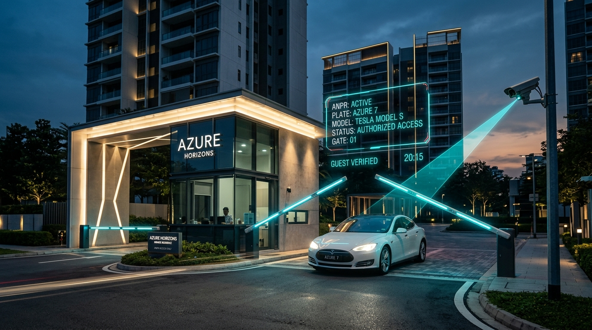
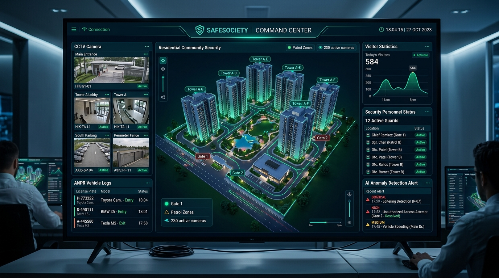

The gatekeeper that doesn’t make your community wait.
Effortless security for 40,000+ homes.
Say goodbye to soggy paper registers, frustrated guards, and endless intercom calls. SafeSociety connects residents, security personnel, RWAs, vehicles, and physical boom barriers into one synchronized, offline-resilient rhythm.

Yesterday’s Paper Chaos vs. SafeSociety Protocol
Most residential societies still rely on soaked registers, broken intercoms, and frustrated delivery couriers. Here is how SafeSociety restores order and dignity to the society entrance.
The Fragility of Manual Gates
-
✕
Manual Paper Registers: Illegible scribbles, fabricated visitor phone numbers, and untraceable exit timestamps.
-
✕
Intercom Phone Tag & Gate Bottlenecks: Visitors wait 5 to 10 minutes at the boom barrier while guards repeatedly dial busy resident phones.
-
✕
Unmonitored Domestic Staff: Attendance of domestic workers and contractors is tracked on manual ledgers prone to payroll disputes.
-
✕
Multi-Tower Blindspots: Visitors approved for Tower A can wander into Tower C without clearance.
-
✕
Internet Outage Paralysis: When Wi-Fi drops at the gatehouse, cloud-only apps freeze, forcing guards back to pencil and paper.
The Connected Society Protocol
-
✓
Sub-Second Digital Photo Passes: Photo, contact, visiting unit, and purpose captured in under 8 seconds.
-
✓
1-Tap App Approvals & Pre-Invites: Residents approve arrivals instantly or generate self-expiring VIP guest QR passes.
-
✓
Automated ANPR Boom Barriers: Whitelisted resident cars glide through without rolling down windows; guest plates are logged.
-
✓
Tower-Specific Access Routing: Couriers and visitors are authorized only for their designated tower and wing.
-
✓
Offline-First SQLite Edge Cache: Guards continue full verification even during complete network blackouts.
Three Tailored Interfaces. One Unified System.
Crafted specifically for residents in their living rooms, security guards at the boom barrier, and RWA management committees managing multi-tower townships.
1-Tap Visitor & Delivery Approval
Instant notification with visitor portrait, courier badge, and flat destination. Approve, reject, or speak to the gatehouse with a single tap.
Pre-Invite VIP Guests with Seamless QR
Send WhatsApp or SMS invites with one-time or recurring QR access passes. Guests scan directly at the gate without waiting for intercom calls.
Domestic Staff Attendance & Ledger
Receive notifications when your cook, maid, or driver enters the society. Review monthly attendance logs, calculate wages, and rate service quality.
Real-Time Vehicle Entry Snapshots
Receive optical gate snapshots whenever your registered car enters or leaves the gates, giving peace of mind even when you are traveling abroad.
High-Velocity 2-Second Verification
Designed with high-contrast oversized touch controls so guards can register walk-in visitors and delivery couriers in under two seconds.
Zero-Downtime Offline Edge Cache
When society Wi-Fi or cellular drops, local SQLite cache maintains full offline validation of resident vehicles and authorized staff.
Instant Blacklist & Intrusion Lockdown
Flaggable license plates and unauthorized tailgaters trigger prominent visual & audio alarms on the guard terminal with 1-touch gate lockdown.
Multi-Gate Cross Handover Protocol
Guards at Gate 1, Gate 2, and Tower lobbies stay synchronized, tracking exact vehicular and pedestrian routes across township premises.

3D Digital Twin & Traffic Analytics
Visualize gate throughput, peak visitor influx hours, delivery vehicular density, and parking occupancy across every tower and wing in real time.
AI Natural Language Security Assistant
Query your society database in plain English: "Show all delivery vehicles on premises past 45 minutes" or "List unauthorized gate attempts after 1 AM."
Forensic Incident Investigation Logs
Search multi-camera timestamps, license plate numbers, and visitor approval records to resolve incidents in minutes rather than days.
Emergency Broadcast & Maintenance Notices
Publish society-wide notices, trigger emergency evacuation alerts, automate maintenance fee collection, and track resident feedback seamlessly.
The Complete Visitor Journey: Arrival to Exit
Test the seamless four-stage verification pipeline directly in this interactive simulator. Experience how a guest is welcomed, validated, and logged with zero friction.
Visitor Arrives at Society Entrance

Mark Jensen
Courier / Logistics • Amazon Package Delivery
Destination: Tower A — Flat 402 (Priya Sharma)
The security guard initiates quick registration on the Guard Tablet. The optical camera captures the visitor's portrait and delivery parcel details in under 3 seconds. The system immediately routes an instant high-priority push to Flat 402.
Resident Receives Instant Notification
Resident Makes Instant Decision
Click one of the actions below to simulate the resident's response:
Digital Pass Active & Exit Recording
Test The Smart Gate Hardware Terminal
Experience how SafeSociety identifies vehicles in sub-second time, queries resident permissions, and commands physical boom barriers to lift. Try preset plates or type any custom number.
Engineered Beyond Simple Visitor Apps. A Complete Community OS.
Discover the high-availability security architecture designed to operate multi-gate complexes, high-rise towers, and physical gate automation without a single point of failure.
Contextual Gate Security
Evolving past simple guest questions to full contextual verification: Who is entering, why, which gate, which specific tower, and are they authorized right now?
Multi-Gate & Tower Rules
Granular rule enforcement: Service deliveries must enter through Service Gates; Tower A guests cannot cross into Tower B wings without separate clearance.
Optical ANPR & Vehicle AI
Smart camera recognition instantly verifies registered cars, flags unauthorized plates, detects tailgaters, and logs full high-res vehicle entry snapshots.
Identify → Verify → Open
Direct hardware relay controller for physical boom barriers, turnstiles, and RFID gates. Replaces simple proximity sensors with intelligent policy verification.
Offline Security Mesh
Guards never lose functionality when internet drops. Local SQLite database handles validation and silently reconciles with cloud once connectivity returns.
AI Security Assistant
Natural language analytics for RWA management: "Show unusual midnight entries this week" or "Which gate had highest traffic between 5 PM and 8 PM?"
Interactive Society ROI & Efficiency Calculator
Adjust the sliders below to see the tangible monthly hours saved, wait-time reductions, and cost savings SafeSociety delivers for your specific community size.
Deployment Plans for Every Community Scale
Zero hidden fees. Full hardware controller integration support, complimentary guard training, and 24/7 dedicated society concierge.
Gated Community
Ideal for boutique villa enclaves and standalone residential complexes up to 150 units.
- Resident iOS & Android Apps
- 1 Dedicated Guard Tablet License
- 1-Tap Visitor Approvals & Guest QR
- Domestic Staff Attendance Ledger
- Offline Edge Sync Support
High-Rise Township
Engineered for multi-tower complexes, apartments, and gated societies with 2–6 gates.
- Everything in Gated Community
- Optical ANPR Vehicle Recognition
- Physical Boom Barrier Integration
- Multi-Tower Granular Access Rules
- AI Anomaly & Loitering Sentinel
- Intelligent Visitor Parking Allocator
- Unified 1-Touch Emergency SOS Matrix
Smart City / Megapolis
Custom enterprise solution for mega townships, mixed-use tech parks, and master builders.
- Unlimited Gates, Towers & Terminals
- Custom CCTV NVR / DVR Video Ingestion
- Natural Language AI Security Assistant
- ERP & Society Accounting Integration
- Dedicated On-Site Deployment Engineer
- 99.99% Guaranteed Enterprise SLA
Frequently Asked Questions
Everything your RWA Management Committee, Security Head, and Society Treasurer need to know before upgrading.
Ready to give your society the security it deserves?
Schedule a complimentary, on-site gate security and boom barrier automation assessment with our senior township architects.